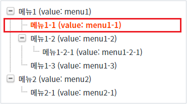

스크립트로 TreeView의 노드를 선택하는 예제입니다.
노드의 Index 또는 Value로 노드를 선택할 수 있으며 TreeView에서 제공하는 함수는 다음과 같습니다.
findNodeByIndex( index , select ) : Index로 노드를 선택합니다.
findNodeByValue( value , select ) : Value로 노드를 선택합니다.
노드의 Index로 노드 선택하기
노드의 Value로 노드 선택하기
STEP 1. 초기 상태를 확인합니다.
TreeView가 구성되어 있고 선택된 노드는 없습니다. 노드의 Value를 확인하기 위해 Lable에 Value를 표기하였습니다.
그림 1.브라우저(Chrome) 실행 예시
STEP 2. 노드의 Index로 노드 선택하기
버튼 노드의 Index가 2인 노드 선택하기를 클릭합니다.STEP 3. 실행된 결과를 확인합니다.
노드의 Lable이 '메뉴1-1 (value: menu1-1)'인 노드가 선택됩니다. (노드의 Index는 1부터 시작합니다.) TreeView의 선택된 노드를 강조하기 위해 선택된 노드의 글자색을 붉은색으로 적용하였습니다.
그림 2.브라우저(Chrome) 실행 예시

STEP 1. 초기 상태를 확인합니다.
TreeView가 구성되어 있고 선택된 노드는 없습니다. 노드의 Value를 확인하기 위해 Lable에 Value를 표기하였습니다.
그림 3.브라우저(Chrome) 실행 예시
STEP 2. 노드의 Value로 노드 선택하기
버튼 노드의 Value가 'menu2'인 노드 선택하기를 클릭합니다.STEP 3. 실행된 결과를 확인합니다.
노드의 Label이 '메뉴2 (value: menu2)'인 노드가 선택됩니다. (노드의 Lable에 Value를 표기되어 있습니다.) TreeView의 선택된 노드를 강조하기 위해 선택된 노드의 글자색을 붉은색으로 적용하였습니다.
그림 4.브라우저(Chrome) 실행 예시
TreeView의 함수 'findNodeByIndex'를 이용하여 스크립트를 작성합니다. 세부 지정은 아래의 스크립트 예시에 작성되어 있습니다.
스크립트
// TreeView 'trv_exam1'의 노드 Index가 2인 노드를 선택합니다. // 두 번째 인자를 true로 지정해야 노드가 선택됩니다. trv_exam1.findNodeByIndex(2, true);
TreeView의 함수 'findNodeByValue'를 이용하여 스크립트를 작성합니다. 세부 지정은 아래의 스크립트 예시에 작성되어 있습니다.
스크립트
// TreeView 'trv_exam1'의 노드의 Value가 'menu2menu2'인 노드를 선택합니다. // 두 번째 인자를 true로 지정해야 노드가 선택됩니다. trv_exam1.findNodeByValue("menu2", true);
findNodeByIndex( index , select )
findNodeByValue( value , select )
[웹스퀘어5 SP5 개발 가이드] TreeView
링크 : https://docs1.inswave.com/sp5_user_guide/571f1c72bb8f77e6#bc8a9426f270f915